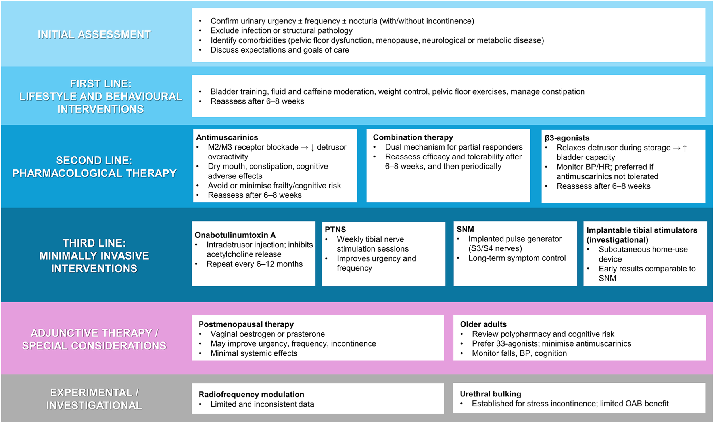

Página 12 · Tratar a bexiga hiperativa
Bexiga hiperativa: treinar a bexiga e o anticolinérgico
A bexiga contrai sozinha — como treiná-la a esperar, e qual remédio bloqueia a contração?
A bexiga hiperativa NÃO tem cirurgia (é problema funcional)
Comece por descartar o bisturi: a bexiga hiperativa NÃO tem cirurgia. É um problema funcional, e não se resolve problema funcional operando. A síndrome da bexiga hiperativa é clínica — urgência + polaciúria + nictúria (urina o dia inteiro e a noite inteira). É a síndrome da Lurdinha, e é o quadro clínico cujo laudo urodinâmico, quando existe, é a hiperatividade detrusora.
O comportamental (quebra de paradigma): peso, evitar irritantes, parar o cigarro, fisioterapia
Assim como na incontinência de esforço, houve uma quebra de paradigma: antes o tratamento era muito baseado em remédio, hoje o remédio é adjuvante. O primeiro degrau é comportamental. Perder peso. Evitar substâncias que irritam a bexiga — cafeína e frutas cítricas. Parar o cigarro, com benefícios que vão além da bexiga (menos câncer de pulmão e de bexiga — a coerência com o red flag do câncer de bexiga). E fisioterapia: cinesioterapia (a terapia do movimento) e eletroestimulação. É o mesmo espírito da outra escada — resolve muita gente antes de qualquer comprimido.
O treinamento vesical: ensinar a bexiga a esperar
Uma peça própria da bexiga hiperativa é o treinamento vesical: treinar a bexiga a segurar um pouco mais. Se a paciente urina de hora em hora, combina-se esticar 10 minutos na primeira semana; depois 20 minutos a mais; e vai-se espaçando progressivamente até ela ter uma janela de tempo confortável para sair e voltar sem perder urina. Funciona — é reeducar a bexiga a esperar o momento certo, degrau a degrau.
O mecanismo: bloquear o receptor muscarínico da acetilcolina
Quando o comportamental não basta, entra o remédio de primeira linha, e o princípio dele é claro: bloquear o receptor muscarínico da acetilcolina. Ao ser ativado (pela acetilcolina), o receptor muscarínico promove a contração do detrusor; o anticolinérgico evita a contração ao não deixar esse receptor ser ativado. Sem ativação do muscarínico, o detrusor não contrai fora de hora — é atacar o mecanismo da hiperatividade na origem.
Os 5 anticolinérgicos — a diferença é o efeito colateral (e o déficit cognitivo no idoso)
Os anticolinérgicos são cinco, e todos funcionam: trospium, darifenacina, solifenacina, oxibutinina e tolterodina. A diferença entre eles é o efeito colateral. Oxibutinina e tolterodina dão mais efeito colateral e são menos usadas hoje; trospium, darifenacina e solifenacina são mais modernos e dão menos efeito colateral. Por que oxibutinina e tolterodina são piores? Além da boca seca (comum a todos), elas atravessam mais a barreira hematoencefálica e podem causar déficit cognitivo — e a maioria dessas pacientes é idosa, onde o prejuízo cognitivo pesa muito. Já há questão de prova dizendo que oxibutinina e tolterodina são menos utilizadas justamente por terem mais efeito colateral. A escolha do anticolinérgico, portanto, é uma escolha de segurança — sobretudo no idoso.
| Anticolinérgico | Efeito colateral | Atravessa a BHE? | Uso hoje |
|---|---|---|---|
| Oxibutinina | mais efeito colateral | SIM — déficit cognitivo (ruim no idoso) | menos usada |
| Tolterodina | mais efeito colateral | SIM | menos usada |
| Trospium | menos efeito colateral | menor | mais usada |
| Darifenacina | menos efeito colateral | menor | mais usada |
| Solifenacina | menos efeito colateral | menor | mais usada |
Detalhe fino — a boca seca e a barreira hematoencefálica
A boca seca é comum a todos os cinco (efeito anticolinérgico de classe). O que separa os piores é a penetração central: oxibutinina e tolterodina atravessam mais a barreira hematoencefálica e, por isso, arriscam déficit cognitivo — problema sério na paciente idosa, que é a maioria. Trospium, darifenacina e solifenacina penetram menos e são preferíveis nesse cenário.

Um fluxograma publicado situa onde o anticolinérgico entra: 1ª linha comportamental → 2ª linha antimuscarínico / β3 → 3ª linha minimamente invasiva. Ver a escada inteira deixa claro que o remédio é adjuvante, não o começo.
Braga A, Goldman HB, Padoa A, Serati M. Figure 1, World Journal of Urology 2026;44:400. DOI 10.1007/s00345-026-06471-5. Sob CC BY 4.0.
Quiz — fixação
Paciente de 78 anos com síndrome da bexiga hiperativa, sem resposta ao comportamental, será medicada. Entre os anticolinérgicos, a maior preocupação ao escolher para esta idosa é:
- B — a virada. No idoso o divisor é o SNC: oxibutinina/tolterodina penetram mais e arriscam cognição; os modernos são preferíveis.
- A. Boca seca é comum a TODOS, não exclusiva da oxibutinina — e não é a principal preocupação cognitiva.
- C. Os anticolinérgicos não são todos proibidos na idosa; escolhe-se o de menor penetração central, não se abole a classe.
- D. A mirabegrona é alternativa (sobretudo na contraindicação), mas dizer que “só ela pode” no idoso extrapola — os modernos seguem opção.
Qual o mecanismo de ação dos anticolinérgicos na bexiga hiperativa?
- B — a virada. A acetilcolina no muscarínico gera contração; bloquear o receptor impede a contração fora de hora — a origem da urgência.
- A. Inverte o efeito: ativar o muscarínico PIORARIA a hiperatividade (mais contração).
- C. É o mecanismo da mirabegrona (β3, relaxamento), não do anticolinérgico.
- D. Não é diurético nem age por volume; age no receptor que comanda a contração.
Falta a saída para quando o anticolinérgico está proibido — a via oposta, que relaxa a bexiga em vez de bloquear a contração.